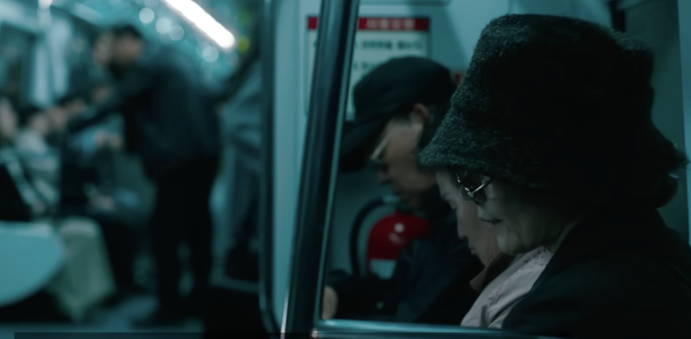
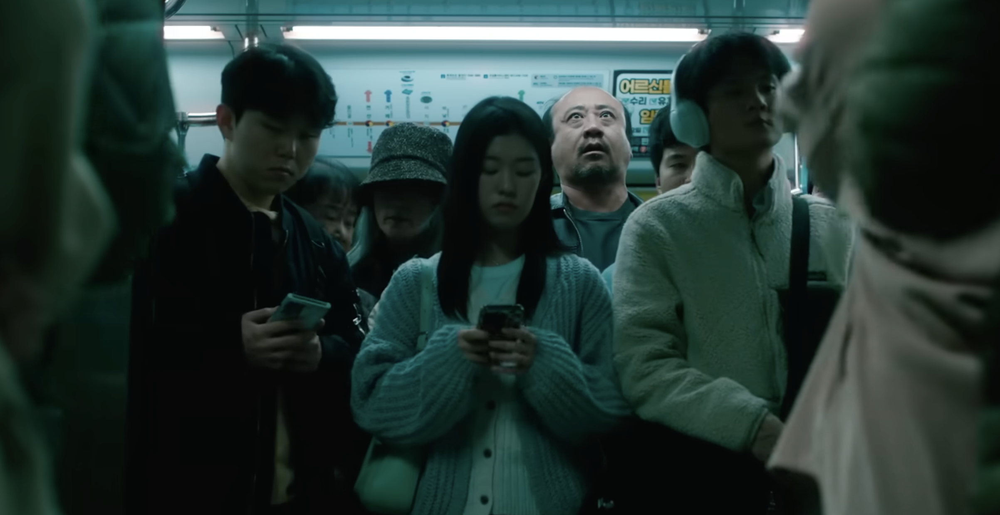
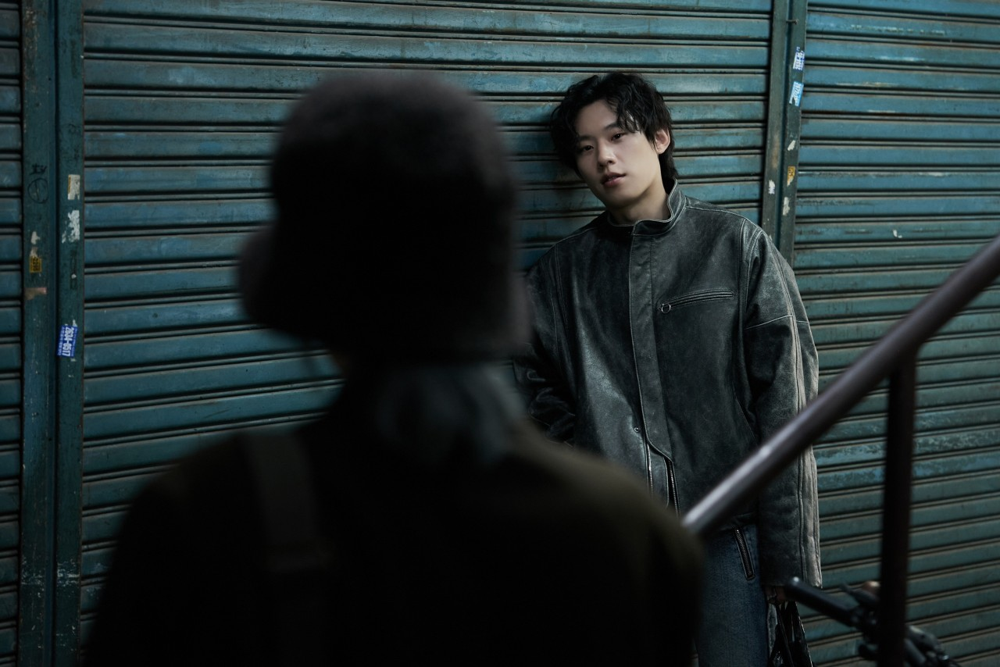
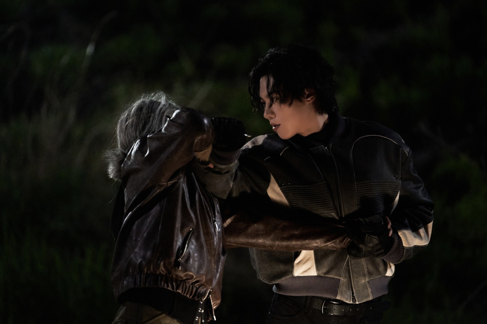

파과는 냉철한 60대 킬러에게 피어나는 연민과 공감을 다루는 책이다. 이 책은 강자도 피할 수 없는 노화와 쇠퇴에 대한 문제의식에서 출발해, 노화는 단순한 쇠퇴가 아니라 인간을 변화시키고 타인과 연결시키는 과정임을 제시한다. 특히 노화, 쇠퇴, 인간성 회복을 중심으로 독자가 언젠가 모두가 마주하게 될 변화와 인간다움에 대해 생각하게 한다.
이 마이크로사이트는 책의 핵심 메시지인 냉철한 60대 킬러에게도 찾아오는 노화와 그 속에서 피어나는 연민과 공감을 사용자가 스크롤을 통해 경험하도록 설계한다. 이를 위해 세로 스크롤 중심의 화면 구조, 최소한의 정보 배치와 여백 중심 레이아웃, 검은 배경과 날카로운 세리프 서체, 스크롤에 따라 이미지와 텍스트가 흐려지고 사라지는 효과를 중심으로 디자인한다. 특히 점차 사라지는 이미지와 텍스트 효과는 주인공의 노화 과정을 표현하기 위한 선택이다. 사용자가 이 사이트를 통해 시간이 지나며 변화하는 몸과 감정을 경험하고, 주인공의 감정과 상황에 몰입하도록 하는 것이 목표다.
조각

지하철 안, 난동을 부리는 남성이 있어도 힘없이 노약자석에 앉아 눈길한번 주지 않는 이 여성은 60대 여성 킬러 조각이다.

그녀는 냉철하고 노련한 업계의 대모다. 그녀의 이번 타겟은 난동을 부리던 바로 그 남성이다.

수많은 세월 동안 단 한 번의 오차도 없이 의뢰를 처리해 온 그녀. 이번에도 노련하고 깔끔하게 처리에 성공한다.

하지만 흐르는 시간 속에서 그녀의 칼날도 조금씩 무뎌지기 시작한다.
투우의 등장

조각의 곁을 맴돌며 예리하게 숨통을 조여오는 새로운 인물, 투우. 그는 30대 신입 킬러이다. 하지만 뛰어난 실력으로 업계에서 현재 가장 인정받고 있는 인물이기도 하다.

숨 막히는 긴장감 속에서 조각에게 자꾸만 시비를 거는 투우. 업계에서도 대모님이라 불리는 조각에게 그는 항상 도발한다.

그의 도발은 단순한 장난이 아닌, 거대한 폭풍의 전조였다.
조각의 부상 그리고 강 박사와의 만남

노화로 인해 이전 같지 않은 몸. 한순간의 실수로 조각은 치명적인 부상을 입고 의식을 잃어가는 상태로 병원에 향한다. 그런 조각을 발견하고 강 박사는 아무런 의심 없이 그녀를 치료한다.

정신이 들자마자 킬러로서의 본능적인 방어기제와 극도의 경계심으로 눈앞의 강 박사를 거칠게 몰아붙이는 조각.

차가운 무기를 목에 겨눈 숨 막히는 대치 속에서도, 강박사는 떨거나 두려워하는 기색 없이 자신은 그저 의무를 다했을 뿐이라 한다. 이렇게 두 사람의 기묘하고도 위태로운 인연이 시작된다.
지키고 싶은 것들이 생긴 조각

늘 피와 어둠뿐이었던 조각의 삶 속에, 하나뿐인 어린 딸을 품에 소중히 안아 지켜내는 강 박사의 따뜻하고 무해한 일상이 들어오기 시작한다.
그들 부녀가 함께 나누는 따스한 미소와 평화를 곁에서 지켜보며, 조각은 평생 느껴보지 못한 감정의 일렁임을 겪는다. 쇠잔해져 가던 킬러의 마음속에 처음으로 '파괴'가 아닌 '지키고 싶은 마음'이 태어난 순간이었다.
소중한 것들을 지키기 위한 마지막 혈투

강박사의 딸을 지키기 위한 조각과 그녀를 방해하려는 투우의 마지막 혈투가 시작된다.